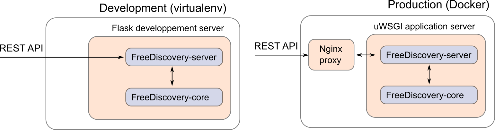

Deployment options¶

1. Starting FreeDiscovery as a daemon¶
The easiest way of running FreeDiscovery as a background service on Linux / MacOS is by using supervisor,
Create a dedicated user account (to avoid running the server as
root),sudo useradd -r freediscovery
Install supvervisor, for instance
sudo apt-get install supervisor
on a Debian/Ubuntu based system. Make sure supervisor is started with,
sudo service supervisor start
Configure supervisor to launch FreeDiscovery by adding creating a new service definition file
/etc/supervisor/conf.d/freediscovery.conf[program:freediscovery] command=<freediscovery_excutable_path> run --cache-dir /srv/freediscovery_shared/ -y --hostname 0.0.0.0 -p 5001 --log-file /var/log/freediscovery/freediscovery.backend.log directory=/ autostart=true autorestart=true startretries=1 redirect_stderr=true stdout_logfile=/var/log/freediscovery/freediscovery.stdout.log user=freediscovery
where
<freediscovery_excutable_path>is the absolute path to the FreeDiscovery executable (can be found withwhich freediscovery). You should customize thecomandoptions as needed (seefreediscovery run --help). If you are running freediscovery with the--hostname 0.0.0.0(i.e. connection open from anywhere) make sure the server has a configured firewall.Give the
freediscoveryuser the necessary permissions,sudo mkdir /srv/freediscovery_shared/ sudo chown freediscovery /srv/freediscovery_shared/ sudo mkdir /var/log/freediscovery/ sudo chown freediscovery /var/log/freediscovery/
Reload the configuration,
sudo supervisorctl reread sudo supervisorctl update
and check that freediscovery service is running,
sudo supervisorctl
Going to
http://<server_ip>:<fd_port_number>in a browser should also yield version information about the running FreeDiscovery server.The FreeDiscovery service will auto-launch at startup. It can also be manually started/stopped with,
sudo supervisorctl [start|stop] freediscovery
Please refer to this post for a quick supervisor tutoral, or to supervisor documentation for additional details.